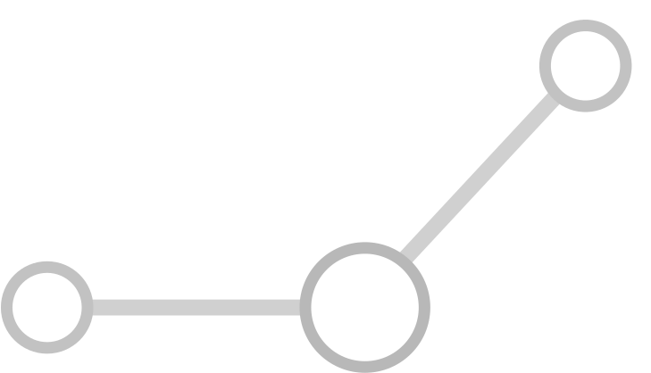

Розділ:
Найважливіші класи неорганічних сполук
Тема:
Способи розділення сумішей
Назва досліду: Відстоювання
Додаткова інформація
2Mg + O
2
= 2MgO
+ Q
Опис досліду:
Нагрівання - умова перебігу реакції розкладу купрум (ІІ) гідроксиду, добутого взаємодією розчинів купрум (ІІ) сульфату та натрій гідроксиду
Дизайн і програмування -
Мордик Ілля
Джерело:
Медіа-посібник "Шкільний хімічний експеримент"